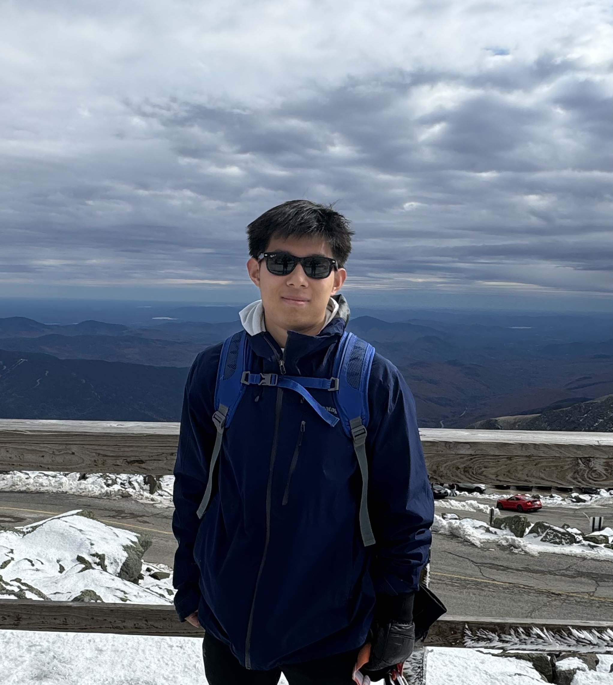

About Me

Hello! I'm Alex, a Computer Science student at Carnegie Mellon University with a passion for computer systems, AI, and robotics. I have hands-on experience developing scalable applications, working on autonomous robot systems, and designing high-performance message queues. When I'm not busy, you can find me playing ice hockey, hiking, or hitting up the local climbing gym.
Work Experience
Software Engineering Intern
Sonos | Jun 2026 - Aug 2026
- Rapidly prototyped high-performance, multi-threaded C++ player code for WiFi speakers, enabling new experiences using Bluetooth Low Energy (BLE), WiFi, and ultrasonic signaling.
- Engineered distributed communication and state synchronization across Sonos players over WiFi, maintaining coherent views across networked devices.
- Developed ultrasonic signal correlation and detection logic to enable reliable interaction between nearby players.
Software R&D Intern
PTC (Onshape) | Jun 2025 - Aug 2025
- Spearheaded development of an all new Notes Panel with Markdown support, granular permissions, and preview modes, driving the project from design through deployment to all customers in August 2025.
- The new Notes Panel required changes to server-side Java code, as well as significant changes to client-side JavaScript, HTML, and CSS, including a new module in AngularJS.
- Revamped admin page UI and implemented server-side sorting, pagination, and search in MongoDB for improved scalability.
- Practiced agile development and CI/CD best practices within Onshape's three-week sprint cycles.
- Included below is a limited video demo of the scope of this Notes Panel project.

Research Assistant
CMU Search-Based Planning Lab | May 2025 - Aug 2025
- Implemented and evaluated dozens of sampling-based algorithms for single-agent start-to-goal search.
- Investigated novel conflict-resolution strategies for multi-agent planning under uncertainty.
Robotics/Computer Vision Intern
Dassault Systemes (Solidworks) | Dec 2024 - Jan 2025
- Designed and developed single- and multi-camera pose estimation using pure computer vision techniques in Python/C++ with OpenCV.
- Used AprilTags and computed position using geometric transformations, achieving a 5x speedup and improved precision compared to prior versions.
C++ R&D Development Intern
Poisson Software Co. | Jun 2024 - Aug 2024
- Built a high-performance, multi-threaded message queue and broker in C++.
- Developed persistent caching to accelerate repeated 3D model computations.
My Projects
Distributed LZ-Compression on Supercomputer
Wrote a custom parallel implementation of LZW and LZ77 compression algorithms designed for the Pittsburgh Supercomputer (PSC), using MPI and OpenMP for CPU-parallelism and CUDA for GPU-parallelism.
View Report (PDF)In-Car Pedestrian Blind Spot Warning System
Developed a real-time pedestrian detection and blind-spot warning system using camera-based computer vision and embedded hardware mounted in a car, with sensor-processing and warning logic that alerts drivers through spatial audio and a visual interface.
View Demo VideoB+ Tree and Buffer Pool Manager
Implemented a custom Buffer Pool Manager and B+ Tree index for the BusTub DBMS in C++ with concurrency control, scalable parallelism, SIMD, and caching strategies, achieving top 5 in the Spring 2026 class benchmark.
Cloud Computing & Microservices
Created an application to elastically scale AWS EC2 instances based on a simulated demand curve. Also deployed and scaled microservices on Azure using Kubernetes.
TartanAUV - Robotic Submarine
Working on the CMU Robotic Submarine Team to refine reinforcement learning capabilities for object detection and recognition using Python and ROS.
View Project (torpedo.py)High-Performance Malloc (C)
Built a high performance implementation of Malloc in C for CMU's Intro to Computer Systems class. Used multiple doubly-linked lists to achieve high throughput and low fragmentation. Top 3% in the class (including Master's students).
View Project (mm.c)Carnegie Mellon Racing (CMR)
Created a C++ midpoint tracing algorithm using lidar data for CMR's driverless competition vehicle, improving real-time positioning performance.
Please note, due to Academic integrity and privacy reasons, the files containing these projects are private. Please reach out to me to disucss further.
Skills
Languages
Systems & Parallel Computing
Frameworks & Tools
Databases & Cloud
Get In Touch
I'm always open to discussing projects or creative ideas. Feel free to reach out!